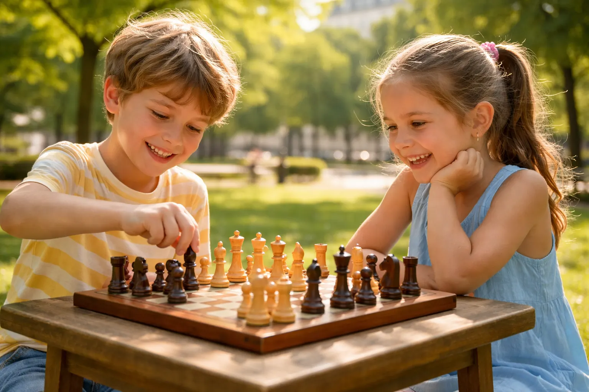

📋 Au sommaire
- Le problème des vacances : écrans, ennui et culpabilité parentale
- Pourquoi les échecs sont l'activité idéale pendant les vacances
- Programme type : initiation aux échecs pendant les vacances
- Les 5 formats possibles pour pratiquer les échecs
- Témoignages de parents
- FAQ : vos questions, mes réponses
- Prêt à essayer ? 1er cours offert
Le problème des vacances : écrans, ennui et culpabilité parentale
Soyons honnêtes. La gestion des vacances scolaires, c'est un sport de haut niveau pour les parents parisiens. Entre le travail qui ne s'arrête pas, les assistances maternelles fermées, les activités qui affichent complet depuis janvier et les budgets qui s'envolent... la solution de facilité, c'est l'écran.
Et ce n'est pas un jugement — c'est une réalité. 78 % des parents d'enfants de 6-12 ans avouent que le temps d'écran double pendant les vacances scolaires. La culpabilité suit, inévitablement.
Mais le problème, ce n'est pas seulement le temps d'écran. C'est aussi la question de la stimulation intellectuelle. Deux semaines de vacances, ça peut faire reculer des semaines d'apprentissage. Des études montrent qu'un enfant peut perdre jusqu'à un mois de niveau scolaire sur une longue période de vacances sans activité cognitive structurée.
Alors, que faire ? Les cours particuliers de soutien sont utiles mais souvent vécus comme une punition. Le sport est excellent mais pas toujours accessible partout. Les sorties culturelles sont formidables — mais elles ne se font pas tous les jours. Il manque quelque chose : une activité que l'enfant attend avec impatience, qui le stimule vraiment, et qui ne coûte pas les yeux de la tête.
Pourquoi les échecs sont l'activité idéale pendant les vacances
J'entends souvent des parents me dire : "Les échecs, c'est pas un peu austère pour des vacances ?" Non. Absolument pas. Et voici pourquoi les vacances sont en réalité le meilleur moment pour commencer.
Pas d'écran — mais une vraie stimulation
Les échecs offrent quelque chose de rare : le plaisir du défi sans les effets négatifs de l'hyperactivation numérique. Pas de lumière bleue, pas de notifications, pas de boucles de récompense artificielle conçues par des ingénieurs pour rendre accro. Juste deux cerveaux qui se mesurent sur 64 cases.
Et pourtant, le niveau d'engagement est comparable. Un enfant plongé dans une partie d'échecs qu'il apprécie ne voit pas passer le temps. Garanti. Vous pouvez comparer ça aux jeux vidéo en termes de concentration — sans les inconvénients. Pour aller plus loin, j'ai écrit un article complet sur la comparaison échecs vs jeux vidéo qui vous donnera tous les éléments pour en parler avec votre enfant.
Apprendre en s'amusant — pour de vrai
Les vacances ne sont pas le moment de "faire l'école à la maison". Mais elles peuvent être le moment d'un apprentissage différent, plus libre, plus motivant. Aux échecs, l'enfant apprend :
- La logique et la pensée structurée — anticiper les conséquences de ses actes
- La gestion des émotions — tenir face à la pression, rester calme
- La persévérance — une partie peut se retourner jusqu'au dernier coup
- La créativité — chaque position est unique, il faut inventer sa solution
Tout ça sans que l'enfant ait l'impression d'être en train d'"apprendre". C'est le charme des échecs. Pour en savoir plus sur tous ces bénéfices, consultez notre article sur les 7 bienfaits des échecs pour les enfants.
Pour tous les âges, vraiment
Une fratrie de 6 et 12 ans ? Pas de problème. Les niveaux s'adaptent. Un débutant de 5 ans peut jouer avec un intermédiaire de 10 ans avec un handicap (pièces retirées du camp du plus fort). Les vacances en famille deviennent l'occasion de jouer ensemble — et c'est rare, les activités qui réunissent autant d'âges différents.
Pas cher (et pas logistique)
Un échiquier de base coûte entre 15€ et 30€. Il dure toute une vie. Pas de transport, pas de réservation en avance, pas d'équipement spécifique. Vous pouvez jouer dans le salon, dans un parc, chez les grands-parents. C'est peut-être l'activité la plus accessible qui existe.
Programme type : initiation aux échecs pendant les vacances ♟️
Voici comment j'organiserais une initiation sur deux semaines de vacances, selon l'âge de l'enfant. Ce n'est pas rigide — l'idée est de donner une structure qui reste ludique.
Semaine 1 : Découverte et bases
La première semaine est consacrée à apprivoiser le jeu. Pas de parties complètes tout de suite — c'est une erreur classique qui décourage les débutants.
- Jour 1-2 : Les pièces et leurs mouvements. On joue des mini-jeux : "qui mange qui en premier ?"
- Jour 3-4 : Première notion de stratégie — contrôler le centre, protéger ses pièces
- Jour 5-6 : Premières parties courtes (sur 5x5 cases pour les plus jeunes, échiquier complet pour les 8+)
- Jour 7 : Pause ou révision libre — on rejoue les moments préférés
Semaine 2 : Consolidation et premières tactiques
La deuxième semaine, l'enfant commence à "voir" le jeu différemment. C'est là que ça devient vraiment excitant.
- Jour 8-9 : Les échecs et l'échec et mat — comment finir une partie
- Jour 10-11 : Première tactique : la fourchette (attaquer deux pièces à la fois)
- Jour 12-13 : Parties complètes avec analyse rapide après chaque coup raté
- Jour 14 : "Tournoi familial" — on réunit toute la famille pour une compétition amicale
Adaptation par âge 🎯
Les enfants ne sont pas tous pareils, et les échecs ne se pratiquent pas de la même façon à 5, 8 ou 12 ans.
5-7 ans : le jeu avant tout
À cet âge, on mise sur le storytelling. Le roi est un personnage, les pièces ont une histoire. On commence par apprendre à bouger une ou deux pièces, pas toutes en même temps. Les séances ne dépassent pas 20 minutes. L'objectif : tomber amoureux du jeu, pas maîtriser les règles. Pour une approche détaillée, lisez notre guide sur comment apprendre les échecs à un enfant.
8-10 ans : l'apprentissage structuré
C'est l'âge idéal pour progresser vite. Le cerveau est à la fois suffisamment mature pour la logique et encore assez souple pour absorber les patterns. On peut introduire les premières ouvertures simples (1.e4 e5, puis on développe les pièces), les tactiques de base, et commencer à analyser ses erreurs. Des séances de 30-45 minutes sont tout à fait adaptées.
11 ans et plus : la progression sérieuse
À partir de 11 ans, un enfant motivé peut progresser très rapidement. On peut travailler les ouvertures de façon plus systématique, étudier des finales classiques, s'entraîner sur des puzzles tactiques. Si votre enfant accroche vraiment, envisagez sérieusement un suivi régulier — les progrès seront spectaculaires. C'est aussi l'âge où les tournois commencent à être accessibles et motivants. Pour ceux qui s'inquiètent des défaites, lisez mon article dédié aux enfants qui perdent toujours — c'est une étape normale et importante.
Les 5 formats possibles pour pratiquer les échecs pendant les vacances
Pas une seule façon de faire. Selon votre organisation familiale, votre budget et les envies de votre enfant, plusieurs options s'offrent à vous.
1 Le cours particulier à domicile
C'est le format le plus efficace, sans discussion. Un professeur vient chez vous — ou vous le rejoignez en visio — et adapte chaque séance exactement à votre enfant. Aucun temps perdu, progression maximale, et votre enfant ne peut pas se cacher dans le groupe pour éviter de réfléchir.
C'est ce que je propose : 50€/h à domicile à Paris et Versailles, 40€/h en visio. Et pour tester sans risque, le premier cours est offert. Idéal pendant les vacances pour démarrer sur de bonnes bases, ou pour un enfant qui stagne depuis un moment. L'accompagnement est complet : analyse des parties, répertoire d'ouvertures personnalisé, exercices entre les séances. Pour en savoir plus sur cette formule, consultez la page dédiée aux cours d'échecs pour enfants à Paris.
2 Le stage ou club pendant les vacances
De nombreux clubs d'échecs parisiens proposent des stages pendant les petites et grandes vacances. Format typique : 3h le matin pendant une semaine, en groupe de 6-10 enfants. Très stimulant socialement — votre enfant rencontrera d'autres passionnés de son âge. Inconvénient : moins d'adaptation individuelle que le cours particulier, et il faut réserver tôt (souvent complet en mars pour les vacances d'avril).
Les clubs de la Fédération Française des Échecs proposent un annuaire des stages sur leur site. Prix généralement entre 80€ et 150€ la semaine.
3 En famille
Le moins cher et parfois le plus mémorable. Sortez l'échiquier après le dîner, ou pendant un après-midi pluvieux. L'avantage : vous apprenez avec votre enfant, c'est un moment de complicité rare. L'inconvénient : si vous ne connaissez pas les règles, il faudra apprendre ensemble (pas forcément un problème !) et il sera difficile de le corriger efficacement.
Pour compenser, utilisez des ressources gratuites : Chess.com propose des leçons en français pour débutants, et Lichess a des puzzles adaptés à tous les niveaux. Et si vous êtes dépassé par les questions de votre petit prodige, c'est peut-être le signe qu'un prof s'impose.
4 En ligne
Chess.com et Lichess proposent des cours, des puzzles et des parties contre d'autres enfants du même niveau partout dans le monde. Avantage : disponible 24h/24, adaptatif, et les enfants adorent l'aspect compétitif du classement. C'est un excellent complément, mais difficile d'en faire la seule activité — la dimension humaine (jouer face à quelqu'un) est irremplaçable pour l'apprentissage et le développement social.
Pour les enfants avec TDAH notamment, l'aspect en ligne peut être une bonne transition avant le jeu en présentiel — j'en parle dans mon article sur les échecs et le TDAH.
5 Au parc ou dans l'espace public
Paris a cette particularité merveilleuse : on y croise des joueurs d'échecs un peu partout. Jardin du Luxembourg, Trocadéro, places de village en banlieue... Emmener votre enfant observer des joueurs adultes est souvent une révélation. Ils vont voir des coups qu'ils n'imaginent pas encore, et surtout réaliser que les échecs, c'est vivant, c'est convivial, ça se joue à tout âge.
Certains parcs ont des tables d'échecs permanentes. Vérifiez du côté du Jardin du Luxembourg ou de la place de la République — vous pourrez même faire jouer votre enfant avec des inconnus bienveillants (c'est la culture du jeu d'échecs : on ne refuse jamais une partie à un enfant curieux).
Ce que disent les parents
— Camille, maman de Théo, 9 ans (vacances de juillet)
— Romain et Julie, parents de trois enfants (vacances de Noël)
— Isabelle, maman de Chloé, 11 ans (vacances de printemps)
FAQ : vos questions les plus fréquentes
À partir de quel âge peut-on commencer les échecs pendant les vacances ?
Dès 5 ans, un enfant peut apprendre les règles de base. L'idéal pour une vraie initiation structurée, c'est autour de 6-7 ans. À cet âge, la concentration est suffisante pour une séance de 20-30 minutes et la motivation vient naturellement. Pour les 4 ans, on peut déjà jouer à des jeux dérivés (échecs simplifiés) pour créer l'intérêt avant d'entrer dans les règles complètes.
Il n'y a pas d'âge maximum, évidemment. Les adultes qui commencent les échecs à 30, 40 ou 50 ans progressent très bien — j'en parle dans un autre article. Mais les vacances, c'est typiquement le moment parfait pour lancer les enfants.
Combien de temps par jour est raisonnable pendant les vacances ?
Cela dépend de l'âge et de la motivation de l'enfant :
- 5-7 ans : 20-30 minutes, une fois par jour maximum. La qualité prime sur la quantité.
- 8-10 ans : 45 minutes à 1 heure, avec des pauses. On peut faire deux séances courtes dans la journée.
- 11 ans et plus : 1h à 1h30, éventuellement en incluant des puzzles en ligne en plus des parties.
L'indicateur le plus fiable : si votre enfant réclame "encore une partie", c'est bon signe. S'il soupire quand vous sortez l'échiquier, réduisez la durée et misez sur la qualité des moments choisis.
Que faire si mon enfant n'accroche pas tout de suite ?
Ne forcez pas. C'est le pire service que vous puissiez lui rendre. Voici quelques alternatives si le jeu ne prend pas immédiatement :
- Changez le contexte : un échiquier géant dans le jardin, ou des pièces en chocolat (ça existe !), ça change tout
- Jouez "contre" lui ensemble : vous et lui contre un autre adulte — l'esprit d'équipe motive souvent plus que la compétition directe
- Montrez-lui des vidéos : des compétitions, des anecdotes sur Magnus Carlsen, des puzzles spectaculaires — l'inspiration vient souvent de l'extérieur
- Laissez passer une semaine : parfois l'intérêt arrive avec un peu de recul
Si l'enfant perd souvent et se décourage, c'est une dynamique normale que j'aborde en détail dans cet article dédié. La bonne nouvelle : avec la bonne approche pédagogique, ça se débloque presque toujours.
Faut-il un échiquier physique ou un écran suffit ?
Les deux ont leur place, mais l'échiquier physique reste supérieur pour l'apprentissage des bases, notamment chez les jeunes enfants. La manipulation des pièces, le fait de les sentir, de les déplacer soi-même, crée une mémoire tactile qui aide à mémoriser les mouvements. Commencez avec un vrai échiquier, puis complétez avec les applications une fois que les bases sont là.
Mon enfant a des difficultés de concentration — les échecs sont-ils adaptés ?
Contre-intuitivement, oui. Les enfants avec des troubles de l'attention répondent souvent très bien aux échecs, précisément parce que le jeu crée une structure de défi immédiat qui capte leur attention de façon naturelle. Plusieurs études montrent une amélioration significative de la concentration chez les enfants TDAH pratiquant régulièrement les échecs. J'ai un article complet sur le sujet : échecs et TDAH.
Profitez des vacances pour lancer votre enfant aux échecs
Je propose des cours adaptés à tous les niveaux, dès 5 ans. Cours à domicile à Paris et Versailles (50€/h) ou en visio (40€/h). Disponible 7j/7, y compris pendant toutes les vacances scolaires.
Et pour tester sans risque : le premier cours est entièrement offert. Votre enfant joue, découvre, et vous décidez ensuite si vous voulez continuer. Zéro engagement.
Réserver le 1er cours gratuit📱 06 09 36 56 91 | nicolas.musicki@gmail.com | Réponse sous 24h
📚 Article recommandé
Vous voulez en savoir plus sur ce que les échecs apportent concrètement à votre enfant sur le long terme ?
Échecs dès 5 ans : 7 Bienfaits Prouvés pour Votre Enfant Concentration, mémoire, logique mathématique, confiance en soi — les preuves scientifiques →
Article rédigé par Nicolas Musicki, professeur d'échecs à Paris et Versailles
Retour à l'accueil |
Me contacter